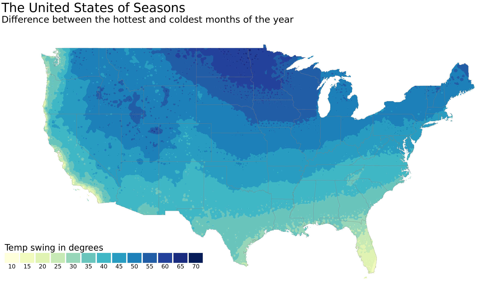
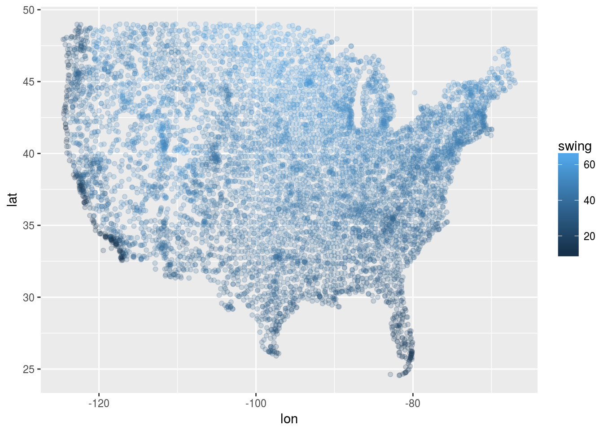
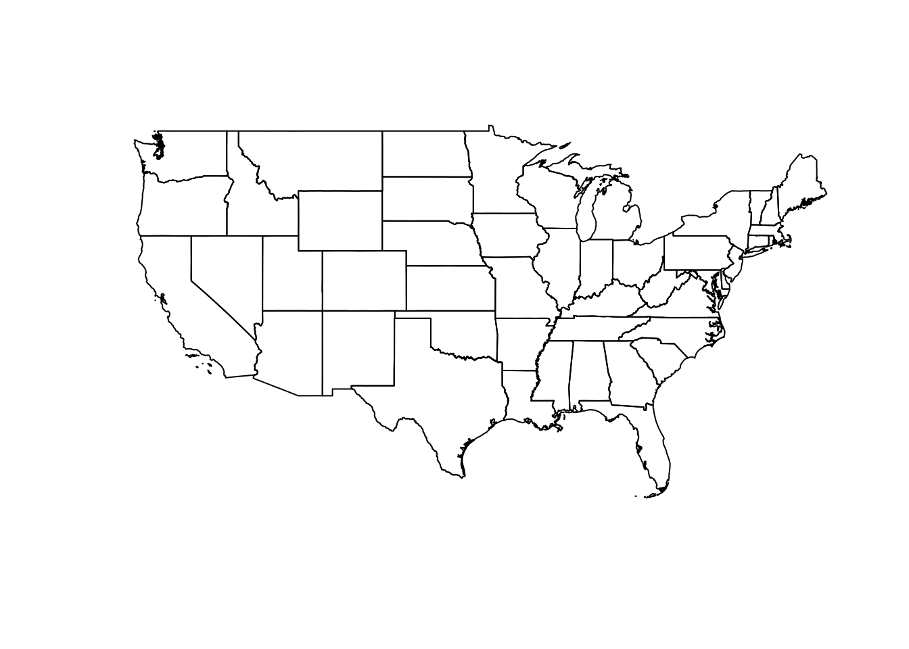
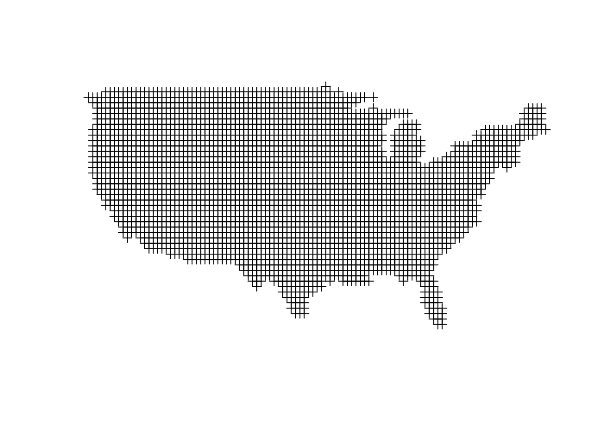
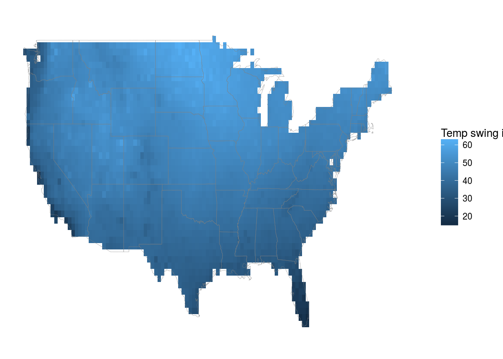
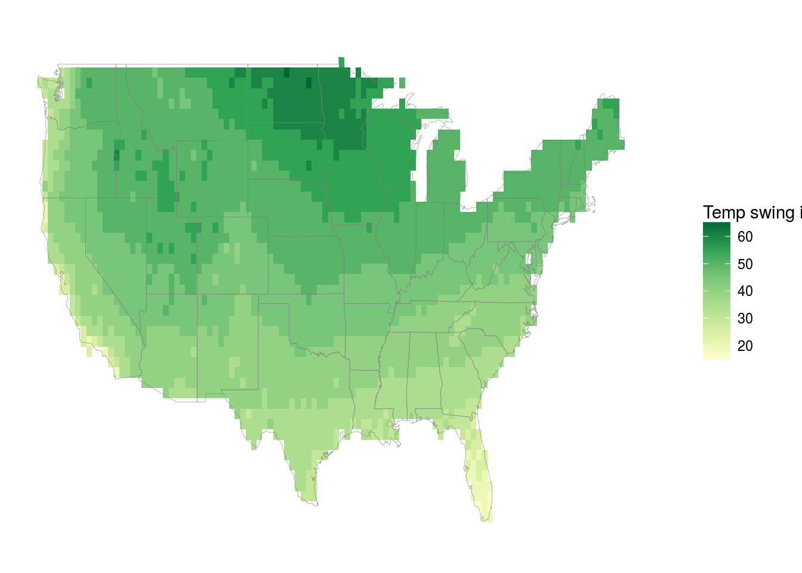

The United States of Seasons

I think my favorite detail about this map is the little splotch that is the Smoky Mountains on the western edge of North Carolina. Having spent a good amount of time there they really do have a different climate than the surrounding area.
The other day my girlfriend and I were talking about places we would like to live after grad school and one of the things that got brought up was how ‘seasonal’ the location is. She grew up in Long Beach, California, which essentially has no seasons, whereas I grew up near Ann Arbor, Michigan which very much has seasons. This got me to thinking: what does the country look like in the context of its seasonality? By ‘seasonality’ we mean how big of a shift in the weather is there during the year.
Being into data and maps I figured I would try and investigate this in a data-driven way. The final result is above this, but here I will walk you through the process that got me from question to map.
The data
The data that I wanted were the average (high) temperature over the year by different locations around the US. Turns out there are some nice APIs for getting this such as Wunderground’s but they all ended up requiring me to pay if I wanted to get anything close to the level of detail I wanted. Luckily, we have a federal government agency that likes to track things related to climate/weather in the National Oceanic and Atmospheric Administration (NOAA) and they have oodles of data.
After some digging I discovered what I was looking for: U.S. Climate Normals, a dataset for ~7,000 stations around the country that contains ‘normal’ or average measures of temperature, wind, etc for the dates from 1981-2010.
Looking in their “https” datasource they had a nice readme.txt. After skimming this document I found that what I was looking for was in products/auxiliary/station, there was a problem though. It is briefly alluded to by the line in the readme corresponding to these files: Users wanting to visually inspect normals for just one or a few stations should use the files in this subdirectory. “Visually inspect”? I don’t want that I want to read it in R! Let’s see what the problem could be….
products/auxiliary/station/CQC00914801.normals.txt
Station Name: MP ROTA AP
GHCN Daily ID: CQC00914801
Latitude: 14.1717
Longitude: 145.2428
Elevation: 179.2m
Temperature-Related Normals
Monthly JAN FEB MAR APR MAY JUN JUL AUG SEP OCT NOV DEC
-----------------------------------------------------------------------------------------------------------
mly-tmax-normal 836R 832R 839R 852R 865R 873R 867R 865R 867R 865R 859R 848R
mly-tavg-normal 788R 782R 790R 801R 811R 817R 811R 808R 808R 808R 806R 800R
mly-tmin-normal 740R 733R 741R 750R 756R 761R 754R 750R 748R 751R 753R 752R
mly-dutr-normal 96R 99R 98R 102R 108R 112R 113R 115R 119R 114R 105R 95R
mly-cldd-normal 428R 371R 434R 453R 498R 501R 498R 488R 473R 490R 468R 465R
mly-htdd-normal 0R 0R 0R 0R 0R 0R 0R 0R 0R 0R 0R 0R
mly-tmax-stddev 8R 14R 13R 8R 6R 8R 6R 5R 14R 7R 7R 8R
mly-tavg-stddev 5R 11R 10R 5R 4R 6R 4R 5R 9R 5R 5R 6R
mly-htdd-base60 0R 0R 0R 0R 0R 0R 0R 0R 0R 0R 0R 0R
...Turns out these files are just a bunch of tables concatinated into a single text file. Not exactly able to be read by read_csv. All I want though is that top line: mly-tmax-normal.... So we can go old school and read the file line by line and extract just that line.
get_station_data <- function(station_id){
station_url <- paste0(
"https://www1.ncdc.noaa.gov/pub/data/normals/1981-2010/products/auxiliary/station/",
station_id,
".normals.txt"
)
file_lines <- readLines(url(station_url))
# find the line that has monthly temp maxes
loc_of_temp <- file_lines %>% str_detect('mly-tmax-normal' ) %>% which()
months <- c('Jan', 'Feb', "Mar", "Apr", "May", "Jun", "Jul", "Aug", "Sep", "Oct", "Nov", "Dec")
# strip out white space and split into a vector of 12 months
file_lines[loc_of_temp] %>%
strsplit('\\s+') %>%
.[[1]] %>%
.[-c(1,2)] %>% {
data_frame(temp = ., month = months, station_id = station_id)
}
}This function will take a given station ID, download the text file corresponding to that station, and extract the monthly temperatures into a nice clean dataframe. Let’s test it out on the station we looked at two seconds ago.
get_station_data('CQC00914801') %>%
knitr::kable()| temp | month | station_id |
|---|---|---|
| 836R | Jan | CQC00914801 |
| 832R | Feb | CQC00914801 |
| 839R | Mar | CQC00914801 |
| 852R | Apr | CQC00914801 |
| 865R | May | CQC00914801 |
| 873R | Jun | CQC00914801 |
| 867R | Jul | CQC00914801 |
| 865R | Aug | CQC00914801 |
| 867R | Sep | CQC00914801 |
| 865R | Oct | CQC00914801 |
| 859R | Nov | CQC00914801 |
| 848R | Dec | CQC00914801 |
The weird letters in the temp columns correspond to the quality of the measurement. Some stations hadn’t been up for all the years so their averages were not as exact. We ignore this here but in a more rigerous analysis we should probably look into them a bit more.
Wonderful! Now all we need is a list of the unique station ids and we’re good to go! Luckily that is in the data as well. station-inventories/allstations.txt contained all the info on each station along with the geographic position of the station. Let’s grab it so we can get scraping!
info_loc <- "https://www1.ncdc.noaa.gov/pub/data/normals/1981-2010/station-inventories/allstations.txt"
# taken from readme.txt
column_names <- c(
'station_id','lat','lon','elevation',
'state','name','gsnflag', 'hcnflag',
'wmoid', 'method' )
station_info <- read_table(info_loc, col_names = column_names) %>%
select(station_id, lat, lon, state)
station_info %>%
head() %>%
knitr::kable(align = c('l','r', 'r', 'r'))| station_id | lat | lon | state |
|---|---|---|---|
| AQC00914000 | -14.3167 | -170.7667 | AS |
| AQW00061705 | -14.3306 | -170.7136 | AS |
| CAW00064757 | 44.2325 | -79.7811 | ON |
| CQC00914080 | 15.2136 | 145.7497 | MP |
| CQC00914801 | 14.1717 | 145.2428 | MP |
| CQC00914855 | 15.1189 | 145.7294 | MP |
Now we just need to loop through all the ids and amass a nice dataset of their temperatures over the year. We are going to do this in a loop rather than something like purrr::map_df because we can more easily handle errors and log progress.
stations <- station_info$station_id
# initialize dataframe for first station
all_station_data <- get_station_data(stations[1])
# vector to hold the stations who we failed to get data for
bad_stations <- c()
# go!
for(station in stations[-1]){
print(station)
tryCatch({
all_station_data <- all_station_data %>%
bind_rows(get_station_data(station))
},error = function(e) {
bad_stations <- c(bad_stations, station)
})
}This loop takes a long time to run. With each query taking ~1-2 seconds and there being ~7,000 unique stations. I let it sit overnight. Amazingly not a single station failed to download. When dealing with long running scripts like this hitting things on the internet that is practically unheard of.
# Exactly 90,000 rows.
all_station_data %>% dim()
## [1] 90000 3So we want a measure of seasonality. We will define this as how big of a delta there is between the warmest and coldest months for each station.
swing_by_station <- all_station_data %>%
mutate(
quality = str_extract(temp, '[A-Z]'),
temp = as.numeric(str_replace(temp, '[A-Z]', ''))
) %>%
group_by(station_id) %>%
summarise(
warmest_month = month[which.max(temp)],
coldest_month = month[which.min(temp)],
swing = (max(temp) - min(temp))/10
) %>%
right_join(station_info, by = 'station_id') %>%
filter((lon < -60 & lon > -130 & lat > 20) & !is.na(swing)) # we only want mainland us
swing_by_station %>%
head() %>%
knitr::kable()| station_id | warmest_month | coldest_month | swing | lat | lon | state |
|---|---|---|---|---|---|---|
| CAW00064757 | Jul | Jan | 51.9 | 44.2325 | -79.7811 | ON |
| USC00010063 | Aug | Jan | 39.2 | 34.2553 | -87.1814 | AL |
| USC00010160 | Jul | Jan | 35.5 | 32.9453 | -85.9481 | AL |
| USC00010178 | Jul | Jan | 36.6 | 33.1272 | -88.1550 | AL |
| USC00010252 | Jul | Jan | 30.8 | 31.3072 | -86.5225 | AL |
| USC00010260 | Jul | Jan | 40.4 | 34.9092 | -87.2747 | AL |
We’re basically done now! Let’s just plot this and call it a day… Unfortnuately it doesn’t work that easily. Let’s see why.
ggplot(swing_by_station, aes(x = lon, y = lat, color = swing)) +
geom_point(alpha = 0.2)
Unsurprisingly, our data are unevenly distributed around the country, we want a nice smooth plot of the swing so we need to do some interpolation. Enter the geospatial side of R.
Geospatial interpolation
What we need to do is fit a model that can predict average swing given a lat-lon pair, along with generating a high-density evenly-spaced grid to run that model on.
Gridding it
To get the grid we will download a US shapefile from the Census’ Tiger repository and use the library rgdal to read it in and exclude the given locations we don’t want to look at.
library(sp)
library(rgdal)
library(gstat)
library(maptools)
not_wanted <- c(
'Alaska', 'American Samoa', 'Puerto Rico', 'Guam',
'Commonwealth of the Northern Mariana Islands United States Virgin Islands',
'Commonwealth of the Northern Mariana Islands',
'United States Virgin Islands', 'Hawaii')
us <- rgdal::readOGR("../../static/seasons/us_shapefile/", "cb_2016_us_state_500k") %>%
subset(!(NAME %in% not_wanted))
## OGR data source with driver: ESRI Shapefile
## Source: "../../static/seasons/us_shapefile/", layer: "cb_2016_us_state_500k"
## with 56 features
## It has 9 fields
plot(us)
Looks right to me! Now let’s calculate a grid of points over this.
# make a big grid that corresponds to the bounding box around out shapefile
grid_us <- makegrid(us, n = 5000) %>%
SpatialPoints(proj4string = CRS(proj4string(us))) %>%
.[us,] # subset the grid such that it only has points that fall inside of our states.
plot(grid_us, type = 'p')
In the final product I bumped up the resolution (n) way higher to make the result smoother
Next we need to fit a model for interpolation. Here I use one of the most common techniques for this: inverse distance weighting. The task of fitting a model to these data is actually a fascinating one that I am not giving nearly enough weight in this post. Here we are just having as inputs lat and lon but we could easily make it more realistic by adding in elevation etc. Some models use 2-d gaussian processes to fit flexible models, some use splines, it’s a vast world and one I would love to dig into more!
# convert the data to a spacial dataframe.
sp::coordinates(swing_by_station) = ~lon + lat
# make sure that the projection matches the grid we've built.
proj4string(swing_by_station) <- CRS(proj4string(us))
# fit basic inverse distance model
idw_model <- gstat::idw(
formula = swing ~ 1,
locations = swing_by_station,
newdata = grid_us,
idp = 2)
## [inverse distance weighted interpolation]
# extract predictions from the interpolation model
interpolated_results = as.data.frame(idw_model) %>% {# output is defined as a data table
names(.)[1:3] <- c("lon", "lat", "swing") # give names to the modeled variables
. } %>%
select(lon, lat, swing)
interpolated_results %>%
head() %>%
knitr::kable()| lon | lat | swing |
|---|---|---|
| -80.80 | 25.34 | 18.65760 |
| -80.26 | 25.34 | 18.35323 |
| -81.34 | 25.88 | 16.24864 |
| -80.80 | 25.88 | 18.56805 |
| -80.26 | 25.88 | 15.06180 |
| -98.62 | 26.42 | 31.26166 |
We’re in business! We’ve now got an evenly spaced grid of points we can plot in a standard raster way!
ggplot(interpolated_results, aes(x = lon, y = lat)) +
geom_raster( aes(fill = swing)) +
xlim(-125, -65) + ylim(24, 51) +
theme_void() +
labs(fill = "Temp swing in degrees") +
borders('state', alpha = 0.1, size = 0.1)
Looks good but could use some improvement. The gradiations are rather smooth and thus it’s hard to see. Let’s bin the swings to 5 degree intervals and change the color pallet to be a bit more appropriate. I chose 5 degree intervals here because I figured that was about the limit of sensitivity for the average person. Totally arbitrary though.
interpolated_results %>%
mutate(swing_in_5s = round(swing/5)*5) %>%
ggplot(aes(x = lon, y = lat)) +
geom_raster( aes(fill = swing_in_5s)) +
scale_fill_distiller(palette = 'YlGn', direction = 1) +
xlim(-125, -65) + ylim(24, 51) +
theme_void() +
labs(fill = "Temp swing in degrees") +
borders('state', alpha = 0.1, size = 0.1)
There it is! In the top plot I have rerun the grid with a much higher n and also tweaked some settings in the legend/scales to make the plot look a bit better. Hopefully now when you have some interesting geospatial data that is not evenly distributed you will know how to deal with it!
Code for top figure.
guide_tinker = guide_legend(
title.position = "top",
label.position="bottom",
label.hjust = 0.5,
direction = "horizontal",
keywidth = 1,
nrow = 1 )
colourCount = interpolated_swings$swing_in_5s %>% unique() %>% length()
palette = colorRampPalette(brewer.pal(9, "YlGnBu"))(colourCount)
interpolated_swings %>%
mutate(swing_in_5s = factor(round(swing_in_5s)))%>%
ggplot(aes(x = lon, y = lat)) +
geom_raster( aes(fill = swing_in_5s)) +
scale_fill_manual(values = palette,
guide = guide_tinker) +
xlim(-130,-67) + ylim(24,50) +
theme_void() +
theme(
text = element_text(family = 'Montserrat'),
legend.justification = c(0,0),
legend.position = c(0,0.02),
legend.title = element_text(size = 10),
legend.text = element_text(size = 8),
legend.box.background = element_rect(fill = '#f0f0f0', color = NA)
) +
labs(
title = "The United States of Seasons",
subtitle = "Difference between the hottest and coldest days of the year",
fill = "Temp swing in degrees") +
borders('state', alpha = 0.1, size = 0.1)
Randomly walking my way though a career in statistics